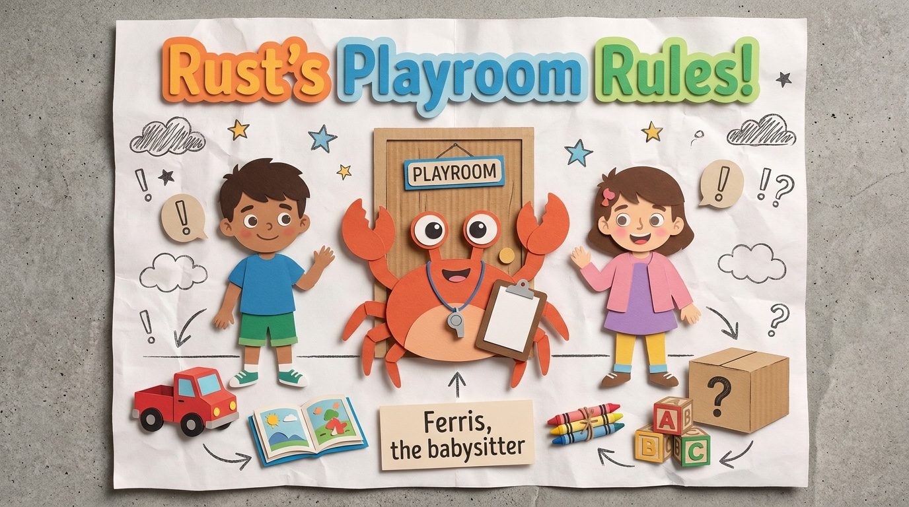
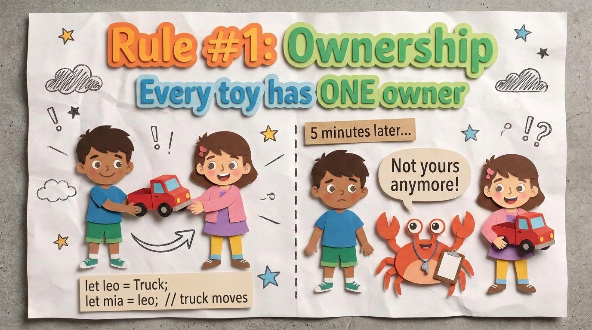
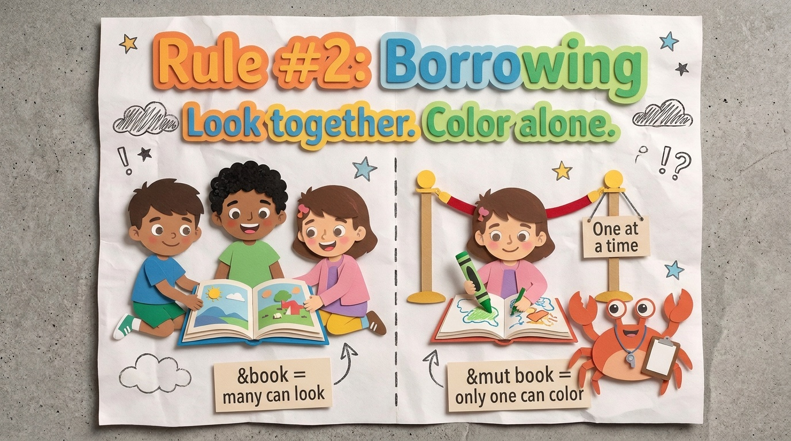
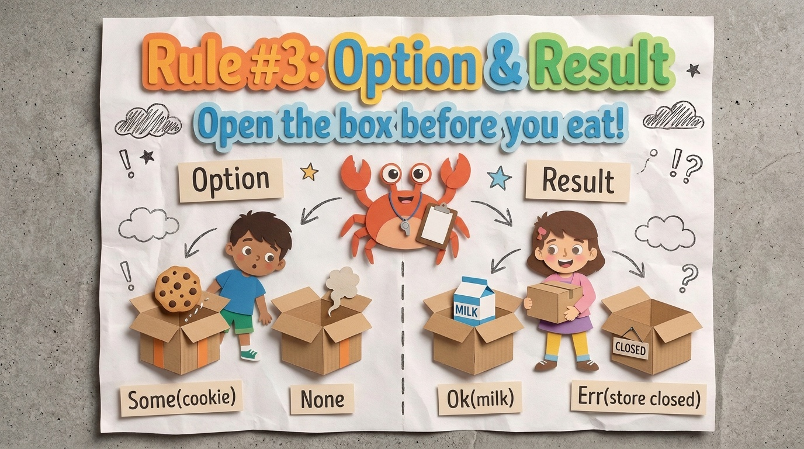
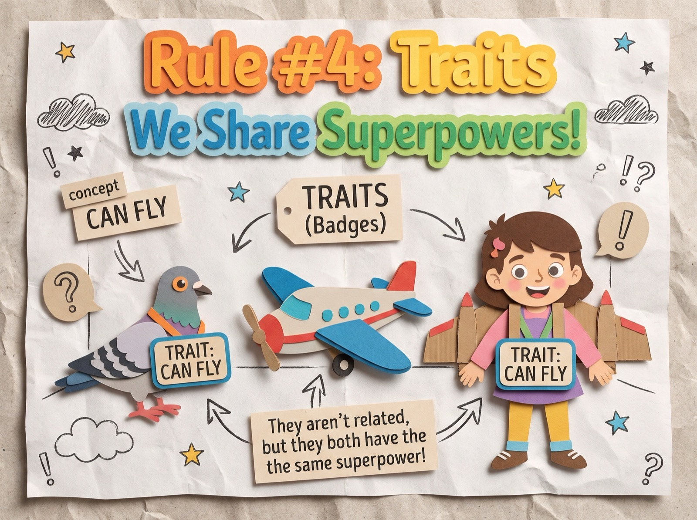
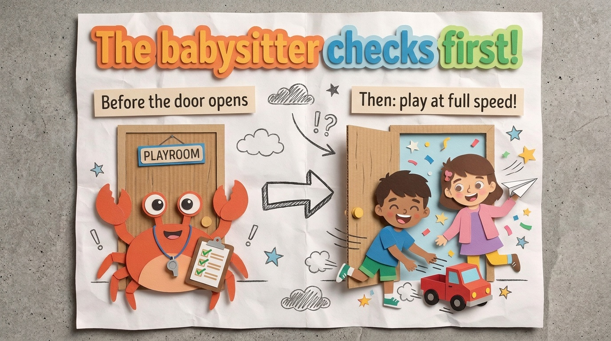

<!DOCTYPE html>
<html lang="en">
<head>
  <meta charset="utf-8" />
  <meta name="viewport" content="width=device-width, initial-scale=1" />
  <title>Stealing good ideas from Rust — Alamo Python</title>
  <style>
    :root {
      --bg: #101012;
      --bg-2: #161318;
      --ink: #f4f1ea;
      --muted: #b7aea6;
      --line: #3a2a26;
      --rust: #e85c36;
      --rust-hot: #f06038;
      --rust-dim: #2c1a17;
      --py: #ffdc48;
      --py-blue: #2f6fad;
      --code-bg: #0c0c0e;
      --ok: #ffdc48;
      --bad: #ff8a70;
      --font-display: "New York", "Iowan Old Style", Palatino, Georgia, serif;
      --font-sans: "Avenir Next", "Segoe UI", "Helvetica Neue", sans-serif;
      --font-mono: "SF Mono", ui-monospace, Menlo, Consolas, monospace;
    }
    * { box-sizing: border-box; }
    html, body {
      margin: 0;
      height: 100%;
      background: #000;
      color: var(--ink);
      font-family: var(--font-sans);
    }
    body {
      display: grid;
      place-items: center;
      overflow: hidden;
    }
    .stage {
      /* Designed at a fixed 1600x900 and scaled to fit any screen, so a
         1280x720 projector shows exactly what a laptop shows. */
      width: 1600px;
      height: 900px;
      position: absolute;
      left: 50%;
      top: 50%;
      transform: translate(-50%, -50%) scale(var(--fit, 1));
      transform-origin: center;
      background:
        radial-gradient(ellipse 48% 92% at 108% 36%, rgba(232, 92, 54, 0.62), transparent 58%),
        radial-gradient(circle 340px at 86% 38%, rgba(240, 96, 56, 0.38), transparent 72%),
        radial-gradient(ellipse 36% 42% at 6% 92%, rgba(47, 111, 173, 0.16), transparent 70%),
        var(--bg);
      overflow: hidden;
    }
    .slide {
      display: none;
      position: absolute;
      inset: 0;
      padding: 72px 88px 96px;
      flex-direction: column;
      justify-content: center;
      gap: 26px;
    }
    .slide.on { display: flex; }
    .slide.hero { justify-content: flex-end; padding-bottom: 110px; gap: 18px; }
    .brand {
      color: var(--ink);
      letter-spacing: 0.28em;
      text-transform: uppercase;
      font-size: 15px;
      font-weight: 600;
    }
    .kicker {
      color: var(--rust);
      letter-spacing: 0.22em;
      text-transform: uppercase;
      font-size: 15px;
      font-weight: 700;
    }
    h1, h2, h3 {
      margin: 0;
      font-family: var(--font-display);
      font-weight: 500;
      letter-spacing: -0.03em;
      text-wrap: pretty;
    }
    h1 { font-size: 84px; line-height: 0.98; max-width: 14ch; }
    h2 { font-size: 52px; line-height: 1.08; max-width: 22ch; }
    h3 { font-size: 26px; font-family: var(--font-sans); font-weight: 600; letter-spacing: 0; }
    .lede {
      font-size: 32px;
      color: var(--ink);
      margin: 0;
      font-weight: 500;
    }
    .desc {
      font-size: 22px;
      color: var(--muted);
      max-width: 36ch;
      line-height: 1.4;
      margin: 8px 0 12px;
    }
    p, li { font-size: 26px; line-height: 1.35; color: var(--ink); text-wrap: pretty; }
    .sub { font-size: 26px; color: var(--muted); max-width: 28ch; }
    .muted { color: var(--muted); }
    ul { margin: 0; padding-left: 1.1em; display: grid; gap: 12px; }
    .row { display: grid; grid-template-columns: 1fr 1fr; gap: 36px; align-items: start; }
    .stack { display: grid; gap: 18px; }
    .meta-row {
      display: grid;
      grid-template-columns: repeat(3, minmax(0, 1fr));
      gap: 28px;
      margin-top: 18px;
      max-width: 920px;
    }
    .label {
      color: var(--rust);
      letter-spacing: 0.2em;
      text-transform: uppercase;
      font-size: 13px;
      font-weight: 700;
      margin-bottom: 6px;
    }
    .meta-row p { font-size: 20px; margin: 0; line-height: 1.3; }
    pre {
      margin: 0;
      background: var(--code-bg);
      border: 1px solid var(--line);
      padding: 20px 24px;
      font-family: var(--font-mono);
      font-size: 20px;
      line-height: 1.45;
      overflow: hidden;
      white-space: pre;
      color: #f0e6dc;
    }
    code {
      font-family: var(--font-mono);
      font-size: 0.92em;
      color: var(--py);
    }
    pre code { color: inherit; font-size: inherit; }
    .quote {
      font-family: var(--font-display);
      font-size: 42px;
      line-height: 1.22;
      max-width: 21ch;
      margin: 0;
    }
    .pill {
      display: inline-block;
      color: var(--rust);
      letter-spacing: 0.18em;
      text-transform: uppercase;
      font-size: 14px;
      font-weight: 700;
    }
    table { border-collapse: collapse; width: 100%; font-size: 22px; }
    th, td { text-align: left; padding: 10px 16px 10px 0; border-bottom: 1px solid var(--line); vertical-align: top; }
    th {
      color: var(--rust);
      font-weight: 700;
      letter-spacing: 0.08em;
      text-transform: uppercase;
      font-size: 15px;
      width: 5.5rem;
      padding-top: 14px;
    }
    table.compare th { width: auto; }
    table.compare td { font-size: 21px; padding: 9px 18px 9px 0; }
    table.compare td:first-child { color: var(--muted); font-size: 18px; }
    .slide.story-slide { padding: 0; align-items: center; justify-content: center; }
    .story-full { width: 100%; height: 100%; object-fit: contain; display: block; }
    .bar {
      position: absolute;
      left: 88px; right: 88px; bottom: 28px;
      display: flex; justify-content: space-between; align-items: center;
      color: var(--muted); font-size: 14px; letter-spacing: 0.16em;
      text-transform: uppercase;
      z-index: 2;
    }
    .progress {
      position: absolute; left: 0; right: 0; bottom: 0; height: 3px;
      background: #1c1412;
    }
    .progress > span {
      display: block; height: 100%; background: var(--rust); width: 0%;
    }
    .notes {
      display: none;
      position: absolute;
      left: 0; right: 0; bottom: 0;
      max-height: 34%;
      overflow: auto;
      background: #1a1413;
      border-top: 1px solid var(--line);
      color: #e8c4b4;
      font-size: 16px;
      line-height: 1.45;
      padding: 16px 88px 48px;
      white-space: pre-wrap;
      z-index: 3;
    }
    .notes.show { display: block; }
    .tag-ok { color: var(--ok); }
    .tag-bad { color: var(--bad); }
    .small { font-size: 19px; color: var(--muted); }
    .split-list { display: grid; gap: 8px; }
    .repo {
      font-family: var(--font-mono);
      font-size: 22px;
      color: var(--rust);
    }
    @media print {
      body { display: block; background: #fff; }
      .stage { position: relative; left: 0; top: 0; transform: none; width: 1600px; height: 900px; page-break-after: always; }
      .slide { display: flex !important; position: relative; }
      .bar, .progress, .notes { display: none !important; }
    }
    @media (prefers-reduced-motion: reduce) {
      * { transition: none !important; }
    }
  </style>
</head>
<body>
  <div class="stage" id="stage">
    <!-- Slide 1 -->
    <section class="slide hero on" data-notes="Pause on the title. Promise: no Rust required. Steal ideas, not syntax. This is the meetup flyer, spoken.">
      <div class="brand">Alamo Python</div>
      <h1>Stealing good ideas from Rust</h1>
      <p class="lede">Python patterns for reliability</p>
      <p class="desc">Fewer runtime surprises, clearer error handling, and more confidence changing production code — without rewriting your app in Rust.</p>
      <div class="meta-row">
        <div>
          <div class="label">When</div>
          <p>November 16<br>Monday · 6:00–8:30 PM</p>
        </div>
        <div>
          <div class="label">Where</div>
          <p>Geekdom<br>110 E Houston St, 3rd Floor</p>
        </div>
        <div>
          <div class="label">Parking</div>
          <p>City Tower Garage<br>60 N. Flores St</p>
        </div>
      </div>
    </section>

    <!-- About me -->
    <section class="slide" data-notes="30–40 seconds. Keep it light. You'll talk about the Rust package at the end.">
      <div class="row" style="grid-template-columns: 320px 1fr; gap: 56px; align-items: center;">
        
        <div class="stack">
          <div class="kicker">About me</div>
          <h2>Hi, I’m Darwing Medina.</h2>
          <ul>
            <li>Python Software Engineer at <strong>Handraise</strong>, based in Austin. We track what the news, social media, and AI models say about a brand.</li>
            <li>Writing Python for work since 2016: Django, FastAPI, data pipelines, and AI.</li>
            <li>These days I review a lot of Python that an AI wrote. That’s how this talk started.</li>
            <li>Some of my work is written in Rust. You’ll hear why at the end.</li>
          </ul>
          <p class="small">handraise.com · github.com/darwing1210 · linkedin.com/in/dmedina93</p>
        </div>
      </div>
    </section>

    <!-- Get the code -->
    <section class="slide" data-notes="20 seconds. Let people scan. Everything tonight is in the repo.">
      <div class="kicker">Follow along</div>
      <div class="row" style="align-items: center;">
        <div class="stack">
          <h2>Get the code before we start.</h2>
          <ul>
            <li>Slides, the full script, and every demo.</li>
            <li>Five agent skills you can copy.</li>
            <li>No cloud. No network. MIT.</li>
          </ul>
          <p class="repo">github.com/darwing1210/thinking-in-rust-writing-in-python</p>
        </div>
        <div style="display: flex; flex-direction: column; align-items: center; gap: 12px;">
          
          <span style="font-size: 15px; color: var(--muted); letter-spacing: 0.12em; text-transform: uppercase;">Scan for slides, code & skills</span>
        </div>
      </div>
    </section>

    <!-- Slide 2 -->
    <section class="slide" data-notes="Hands: who shipped Python an agent wrote part of in six months? Nod. Do not count.">
      <div class="kicker">Who this is for</div>
      <h2>Python people. Not a Rust course.</h2>
      <ul>
        <li>You write Python at work — APIs, jobs, pipelines.</li>
        <li>You have returned <code>None</code> and hoped the next person would know why.</li>
        <li>You have watched an AI write code that ran… and still felt weird about it.</li>
      </ul>
    </section>

    <!-- Slide 3 -->
    <section class="slide" data-notes="Map the 40 minutes. A short Rust story, four habits, then the AI part and a real story.">
      <div class="kicker">40 minutes</div>
      <h2>Four habits. Then we teach them to AI.</h2>
      <table>
        <tr><th>5 min</th><td>A short story: Rust’s playroom rules</td></tr>
        <tr><th>5 min</th><td>1 · Errors — hand the failure back as a value</td></tr>
        <tr><th>5 min</th><td>2 · Typestates — methods only exist when they make sense</td></tr>
        <tr><th>5 min</th><td>3 · Contracts — <code>NewType</code>, <code>assert_never</code>, check data at the edge</td></tr>
        <tr><th>6 min</th><td>4 · Ownership — one writer or many readers</td></tr>
        <tr><th>10 min</th><td>AI agents, the type checker, and when I really write Rust</td></tr>
      </table>
    </section>

    <!-- Slide 4 -->
    <section class="slide" data-notes="Read the quote, then paraphrase. Say it: Python will not stop you. Pyright nags. This is design.">
      <div class="kicker">Central message</div>
      <p class="quote">You don’t need to write Rust. You can still steal the good parts. And if AI is writing your Python, you can teach it those parts too.</p>
    </section>

    <!-- Slide 5 -->
    <section class="slide" data-notes="Forty seconds, then move. Smile. Rust is the teacher, not the religion. LLMs copy patterns in front of them.">
      <div class="kicker">Disclaimer</div>
      <h2>These are not “Rust patterns.”</h2>
      <ul>
        <li>They’re old design habits. Any language can use them.</li>
        <li>Rust just makes them hard to ignore. That’s why we’re borrowing it tonight.</li>
        <li>You are not being asked to rewrite anything in Rust.</li>
        <li>And this matters for AI: models copy the repo. Clear habits in the code → better generated code. Messy habits → more mess.</li>
      </ul>
    </section>

    <!-- Story 1 -->
    <section class="slide story-slide" data-notes="Set up the story. 30 seconds. Smile.">
      
    </section>
    <!-- Story 2 -->
    <section class="slide story-slide" data-notes="One owner. Giving it away is a move. No copies, no secret remote control.">
      
    </section>
    <!-- Story 3 -->
    <section class="slide story-slide" data-notes="Looking = &amp; borrow. Coloring = &amp;mut borrow. This is the rule behind our weather bug later.">
      
    </section>
    <!-- Story 4 -->
    <section class="slide story-slide" data-notes="Option and Result. Both come back in habit 1.">
      
    </section>
    <!-- Story 5 -->
    <section class="slide story-slide" data-notes="[cut] Traits. Optional page. Python&#x27;s version is typing.Protocol.">
      
    </section>
    <!-- Story 6 -->
    <section class="slide story-slide" data-notes="Bridge to the talk: Pyright is our babysitter. Next: habit 1.">
      
    </section>

    <!-- Slide 6 -->
    <section class="slide" data-notes="Let them read the code. Count to four. Three outcomes, two channels. The type dict | None is a lie.">
      <div class="kicker">Pattern 1 · Python problem</div>
      <h2><code>None</code> means two things. An exception means a third.</h2>
      <pre>def ingest(url: str) -> dict | None:
    try:
        raw = fetch_raw(url)
    except SourceTimeout:
        return None
    if raw is None:
        return None
    if not article["title"]:
        raise ValueError("title is required")
    return article</pre>
      <p class="small">Missing article and timeout both come back as <code>None</code>. You cannot tell them apart.</p>
    </section>

    <!-- Slide 7 -->
    <section class="slide" data-notes="Four lines of Rust. Do not teach lifetimes. Souvenir: failure has a type, in return position.">
      <div class="kicker">Pattern 1 · Rust inspiration</div>
      <h2>Don’t hide a failure. Hand it back.</h2>
      <pre>fn ingest(url: &str) -> Result<Article, IngestError> { ... }</pre>
      <ul>
        <li>It worked? That’s <code>Ok</code>. It didn’t? That’s <code>Err</code>. Both are normal return values.</li>
        <li>The next function has to look at which one it got.</li>
        <li>Rust makes you. Python won’t. We can still do it.</li>
        <li>Good news: with strict Pyright, <code>Article | None</code> already works like Rust’s <code>Option</code>. The problem is not <code>None</code>. It’s <code>None</code> meaning two things.</li>
      </ul>
    </section>

    <!-- Slide 8 -->
    <section class="slide" data-notes="This is the whole framework. Two dataclasses. Named errors. match is the operations team in the source.">
      <div class="kicker">Pattern 1 · Python solution</div>
      <div class="row">
        <pre>@dataclass(frozen=True)
class Ok[T]:
    value: T

@dataclass(frozen=True)
class Err[E]:
    error: E

type Result[T, E] = Ok[T] | Err[E]</pre>
        <pre>match ingest(url):
    case Ok(article):
        save(article)
    case Err(NotFound()):
        record_miss()
    case Err(ValidationFailed(f)):
        record_invalid(f)
    case Err(Retryable()):
        schedule_retry()</pre>
      </div>
      <p class="small">That’s the whole trick. Two little classes, then <code>match</code>.</p>
    </section>

    <!-- Slide 9 -->
    <section class="slide" data-notes="Run both commands. If demo fails, read the expected lines and move. Optional: missing and empty-title after.">
      <div class="kicker">Pattern 1 · Demo</div>
      <h2>Same timeout. Now you can tell them apart.</h2>
      <pre>uv run python -m ingest demo --mode before \
  --url https://news.example/timeout

<span class="tag-bad">returned: None</span>
note: None means missing OR timeout.

uv run python -m ingest demo --mode after \
  --url https://news.example/timeout

<span class="tag-ok">retryable: timed out fetching https://news.example/timeout</span></pre>
    </section>

    <!-- Slide 10 -->
    <section class="slide" data-notes="Boundary functions yes. Bug-as-Result no. Two dataclasses, not a monad library.">
      <div class="kicker">Pattern 1 · Trade-offs</div>
      <div class="row">
        <div class="stack">
          <h3>Use it</h3>
          <ul>
            <li>When “it failed” is not enough</li>
            <li>When someone has to retry, skip, or give up</li>
            <li>When you talk to the network</li>
          </ul>
        </div>
        <div class="stack">
          <h3 class="muted">Skip it</h3>
          <ul>
            <li>When you actually have a bug — just raise</li>
            <li>When the team already has one clear exception style</li>
            <li>A script you will delete on Friday</li>
          </ul>
        </div>
      </div>
      <p class="small">Honest cost: Rust has <code>?</code> to pass an error up in one character. Python doesn’t. Every layer needs its own <code>match</code>.</p>
    </section>

    <!-- Slide 11 -->
    <section class="slide" data-notes="Four statuses, two optionals, too many boxes. complete(None) is legal. Methods called out of turn.">
      <div class="kicker">Pattern 2 · Python problem</div>
      <h2>The form with extra boxes — and out-of-order methods.</h2>
      <pre>@dataclass
class Job:
    status: str = "pending"
    result: dict | None = None
    error: str | None = None

    def complete(self, result): ...  # Legal to call before start()!
    def fail(self, error): ...</pre>
      <p class="small">You can complete a job before starting it. And you can complete it with no result.</p>
    </section>

    <!-- Slide 12 -->
    <section class="slide" data-notes="Typestates: methods only exist where valid. Rust consumes the old state; Python cannot — the old Pending variable still exists. We gate methods, not moves.">
      <div class="kicker">Pattern 2 · Rust inspiration</div>
      <h2>The Typestate pattern: methods only exist when valid.</h2>
      <ul>
        <li>In Rust, <code>fn start(self) -> Processing</code> <em>uses up</em> the old job. You can’t touch it again.</li>
        <li>You cannot call <code>.finish()</code> on a <code>Pending</code> job. The method does not exist.</li>
        <li>No runtime checks like <code>if self.status != "running": raise</code>. It fails to compile.</li>
      </ul>
      <p class="small">Find the bug in your editor, not in a 3 AM alert.</p>
    </section>

    <!-- Slide 13 -->
    <section class="slide" data-notes="Show Pending.start() and Processing.finish(). Pending has no finish method!">
      <div class="kicker">Pattern 2 · Python solution</div>
      <div class="row">
        <pre>@dataclass(frozen=True)
class Pending:
    job_id: JobId
    url: Url

    def start(self) -> Processing:
        return Processing(
            self.job_id, self.url
        )</pre>
        <pre>@dataclass(frozen=True)
class Processing:
    job_id: JobId
    url: Url

    def finish(self, res) -> Completed | Failed:
        match res:
            case Ok(val):
                return Completed(self.job_id, val)
            case Err(err):
                return Failed(self.job_id, err)</pre>
      </div>
      <p class="small"><code>Pending</code> has no <code>.finish()</code> method. Calling it is a Pyright error.</p>
    </section>

    <!-- Slide 14 -->
    <section class="slide" data-notes="Show Pyright catching cannot_finish_pending_job.py at compile time!">
      <div class="kicker">Pattern 2 · Demo</div>
      <h2>Pyright catches lifecycle errors before runtime.</h2>
      <pre>job = Pending(job_id=JobId("j1"), url=Url("https://news.example/ok"))

# Bug: trying to finish a pending job before starting it!
job.finish(Err(NotFound(url="https://news.example/ok")))

<span class="tag-bad">error: Cannot access attribute "finish" for class "Pending"
  Attribute "finish" is unknown</span></pre>
      <p class="small">An AI agent or coworker cannot call the wrong method. The compiler blocks it.</p>
    </section>

    <!-- Slide 15 -->
    <section class="slide" data-notes="Primitive obsession & silent match fallthrough. Swapped strings and unhandled states.">
      <div class="kicker">Pattern 3 · Python problem</div>
      <h2>Swapped arguments and silent match fallthrough.</h2>
      <div class="row">
        <div class="stack">
          <p class="pill">1. Swapped string IDs</p>
          <pre>def fetch(url: str, job_id: str): ...

# Bug: swapped arguments!
fetch(my_job_id, my_url)</pre>
          <p class="small">Tests pass because both are <code>str</code>. Production silently corrupts.</p>
        </div>
        <div class="stack">
          <p class="pill">2. Silent match fallthrough</p>
          <pre>match job:
    case Pending(): ...
    case Completed(): ...
    # Forgot Processing & Failed!</pre>
          <p class="small">Python does not check exhaustiveness. It silently returns <code>None</code>.</p>
        </div>
      </div>
    </section>

    <!-- Slide 16 -->
    <section class="slide" data-notes="NewType is zero-cost at runtime. assert_never breaks CI if a union case is missing.">
      <div class="kicker">Pattern 3 · Rust & Python solution</div>
      <div class="row">
        <div class="stack">
          <h3>Zero-cost <code>NewType</code></h3>
          <pre>JobId = NewType("JobId", str)
Url = NewType("Url", str)

def fetch(url: Url, id: JobId): ...
fetch(my_id, my_url)  # Pyright ERROR!</pre>
          <p class="small">Zero runtime overhead. 100% compile-time protection.</p>
        </div>
        <div class="stack">
          <h3>Exhaustiveness with <code>assert_never</code></h3>
          <pre>match job:
    case Pending(): ...
    case Processing(): ...
    case Completed(): ...
    case Failed(): ...
    case _ as unreachable:
        assert_never(unreachable)</pre>
          <p class="small">Add <code>Cancelled</code> to the union? Pyright breaks until handled!</p>
        </div>
      </div>
    </section>

    <!-- Check at the edge -->
    <section class="slide" data-notes="NewType is a label, not a check. Check once at the edge, trust inside. Pydantic for HTTP edges.">
      <div class="kicker">Pattern 3 · The catch</div>
      <h2>A type is a label. It does not check your data.</h2>
      <div class="row">
        <pre>Url("not a url")     <span class="tag-bad"># Pyright: fine.</span>
JobId(some_url)      <span class="tag-bad"># Pyright: fine.</span>


<span class="muted"># Types trust you.
# Data from outside
# should not be trusted.</span></pre>
        <pre>def parse_url(raw: str) -> Result[
    Url, ValidationFailed
]:
    parts = urlsplit(raw.strip())
    if parts.scheme not in ("http", "https"):
        return Err(ValidationFailed(("url",)))
    if not parts.netloc:
        return Err(ValidationFailed(("url",)))
    return Ok(Url(raw.strip()))</pre>
      </div>
      <p class="small">Check once at the edge (HTTP, files, queues — Pydantic is great here). Inside the app, trust the type.</p>
    </section>

    <!-- Slide 17 -->
    <section class="slide" data-notes="setdefault aliases SHARED_TOPICS. Weather story tagged transportation. Aliasing XOR Mutability.">
      <div class="kicker">Pattern 4 · Python problem</div>
      <h2>We tagged the weather story as transportation.</h2>
      <pre>SHARED_TOPICS: list[str] = ["news"]

def enrich(article: dict) -> dict:
    topics = article.setdefault("topics", SHARED_TOPICS)
    if "bike" in body:
        topics.append("transportation")
    topics.append("ingested")
    return article</pre>
      <p class="small">Two articles shared one list. The second one inherited the first one’s tags.</p>
    </section>

    <!-- Ownership & borrowing -->
    <section class="slide" data-notes="Callback to the story: Leo and the truck = move error. Coloring while looking = borrow error. Lifetimes: one sentence.">
      <div class="kicker">Pattern 4 · Back to the playroom</div>
      <h2>What the babysitter really says.</h2>
      <div class="row">
        <div class="stack">
          <p class="pill">1 · Leo drives the truck he gave away</p>
          <pre>let topics = vec!["news"];
let a = topics;   // owner is now `a`
println!("{:?}", topics);

<span class="tag-bad">error[E0382]: borrow of moved
value: `topics`</span></pre>
        </div>
        <div class="stack">
          <p class="pill">2 · Someone colors while others look</p>
          <pre>let mut topics = vec!["news"];
let reader = &topics;   // borrow to read
topics.push("transportation");
println!("{:?}", reader);

<span class="tag-bad">error[E0502]: cannot borrow `topics`
as mutable because it is also
borrowed as immutable</span></pre>
        </div>
      </div>
      <p class="small"><code>&amp;</code> = borrow to read (many at once). <code>&amp;mut</code> = borrow to write (only one). <strong>Lifetimes:</strong> a borrow can’t live longer than the owner — Python’s closest cousin is a <code>with</code> block.</p>
    </section>

    <!-- Slide 18 -->
    <section class="slide" data-notes="Rust's Law: Aliasing XOR Mutability. Python's tiny runtime borrow check in memoryview (not compile-time).">
      <div class="kicker">Pattern 4 · The Ownership Rule</div>
      <h2>Aliasing XOR Mutability.</h2>
      <p class="quote" style="font-size: 34px;">You can have many shared readers, OR one exclusive writer. Never both.</p>
      <ul>
        <li>Our weather bug is two kids coloring the same page. Rust refuses to compile it.</li>
        <li>If more than one part of your program can see an object, <strong>don’t change it in place</strong>.</li>
        <li>Private mutation inside a function is fine (no alias exists yet).</li>
        <li>Fun fact: Python has a tiny <em>runtime</em> borrow check. Resize a bytearray while a <code>memoryview</code> holds it: <code>BufferError</code>.</li>
      </ul>
    </section>

    <!-- Slide 19 -->
    <section class="slide" data-notes="Frozen dataclass, tuples, dataclasses.replace. Pipeline before and after demo.">
      <div class="kicker">Pattern 4 · Python solution & demo</div>
      <pre>@dataclass(frozen=True)
class Article:
    topics: tuple[str, ...] = ()  # Immutable published collection

def tag_topics(article: Article) -> Article:
    local_tags = ["news"]        # Private local mutation: totally fine!
    if "bike" in article.body.lower():
        local_tags.append("transportation")
    return replace(article, topics=tuple(local_tags))

uv run python -m ingest pipeline --mode before  <span class="tag-bad"># leaked tags</span>
uv run python -m ingest pipeline --mode after   <span class="tag-ok"># isolated</span></pre>
    </section>

    <!-- Slide 20 -->
    <section class="slide" data-notes="The real punchline: the compiler as the agent's leash. Strict types turn AI into a self-correcting coder.">
      <div class="kicker">The AI Punchline</div>
      <h2>The type checker keeps the agent on a leash.</h2>
      <div class="row">
        <div class="stack">
          <p class="pill">Sloppy Python (Dicts & None)</p>
          <ul class="split-list">
            <li>AI invents states that should not exist</li>
            <li>Swaps string arguments</li>
            <li>Forgets match branches</li>
            <li>Tests pass; production breaks</li>
          </ul>
        </div>
        <div class="stack">
          <p class="pill">Rust-Inspired Python</p>
          <ul class="split-list">
            <li>Typestates block invalid methods</li>
            <li>NewType blocks swapped IDs</li>
            <li><code>assert_never</code> blocks forgotten cases</li>
            <li><strong>AI self-corrects against Pyright before PR</strong></li>
          </ul>
        </div>
      </div>
    </section>

    <!-- Turn it on -->
    <section class="slide" data-notes="Three steps: strict config, CI, one line for the agent. Skills are in the repo.">
      <div class="kicker">Monday morning</div>
      <h2>Turn the leash on. Three small steps.</h2>
      <div class="row">
        <pre><span class="muted"># 1. pyproject.toml</span>
[tool.pyright]
typeCheckingMode = "strict"

<span class="muted"># 2. CI (or pre-commit)</span>
uv run pyright

<span class="muted"># 3. Agent instructions</span>
"Before you finish, run
 uv run pyright and fix
 every error."</pre>
        <div class="stack">
          <p class="pill">Five skills in the repo</p>
          <ul class="split-list">
            <li><code>explicit-error-handling</code></li>
            <li><code>model-valid-states</code></li>
            <li><code>type-driven-contracts</code></li>
            <li><code>intentional-immutability</code></li>
            <li><code>python-design-review</code></li>
          </ul>
          <p class="small">Markdown files the agent reads first. Claude Code, Cursor, Codex, Hermes.</p>
        </div>
      </div>
    </section>

    <!-- Real Rust -->
    <section class="slide" data-notes="Real story, 90 seconds. The firehose: a Rust service that never stops. Point at Result&lt;Option&lt;String&gt;&gt; and the ? marks: the playroom rules, in production.">
      <div class="kicker">Real life</div>
      <h2>When I do write Rust: the news firehose.</h2>
      <div class="row" style="grid-template-columns: 1.1fr 1fr;">
        <ul style="font-size: 21px;">
          <li>A live stream of news articles comes in all day, every day.</li>
          <li><code>hr-firehose</code> is a Rust service: it reads the stream, saves every article to S3, and indexes it for search.</li>
          <li>It never stops. So it has to be fast, small, and boring.</li>
          <li>Also in Rust: <code>handytools</code>, our URL clean-up package that Python calls through PyO3.</li>
          <li>The API, the jobs, the ML? Still Python.</li>
        </ul>
        <pre style="font-size: 16px; padding: 16px 20px;"><span class="muted">// from hr-firehose (trimmed)</span>
async fn call_api(&amp;self)
    -> Result&lt;Option&lt;String&gt;&gt;
{
    let url = self.request_url()?;
    let body = self.http.get(url)
        .send().await
        .context("request failed")?
        .text().await
        .context("bad body")?;
    if no_articles {
        return Ok(None);
    }
    <span class="muted">// ...</span>
}</pre>
      </div>
      <p class="small">Result of an Option: it can fail, and even when it works, there may be nothing new. Every <code>?</code> passes the error up.</p>
    </section>

    <!-- Slide 22 -->
    <section class="slide" data-notes="Five takeaways you can use this week on one function.">
      <div class="kicker">Steal this</div>
      <h2>Six habits. Pick one function this week.</h2>
      <ul>
        <li><strong>Hand failures back:</strong> stop using <code>None</code> for two different problems.</li>
        <li><strong>Typestates:</strong> put each method only on the state where it makes sense.</li>
        <li><strong>Label your IDs:</strong> <code>NewType</code> so you can’t swap them.</li>
        <li><strong>Close every <code>match</code>:</strong> end it with <code>assert_never</code>.</li>
        <li><strong>Check data at the edge:</strong> then trust the type inside.</li>
        <li><strong>One writer or many readers:</strong> change local data freely; don’t change shared data.</li>
      </ul>
    </section>

    <!-- Slide 23 -->
    <section class="slide" data-notes="Read the quote. Repo name. MIT. No cloud. Questions.">
      <div class="kicker">Alamo Python</div>
      <div class="row" style="align-items: center;">
        <div class="stack">
          <p class="quote">Better Python is not more code. It’s clearer decisions — and giving our AI agents the mechanical guardrails to write safe software.</p>
          <p class="repo">github.com/darwing1210/thinking-in-rust-writing-in-python</p>
          <p class="small">Questions. Should you rewrite the whole app tomorrow? No. Pick one boundary function.</p>
        </div>
        <div style="display: flex; flex-direction: column; align-items: center; justify-content: center; gap: 12px;">
          
          <span style="font-size: 15px; color: var(--muted); letter-spacing: 0.12em; text-transform: uppercase;">Scan for slides, code & skills</span>
        </div>
      </div>
    </section>

    <div class="bar">
      <span>Alamo Python · Stealing good ideas from Rust</span>
      <span id="count">1 / 34</span>
    </div>
    <div class="progress"><span id="prog"></span></div>
    <div class="notes" id="notes"></div>
  </div>
  <script>
    const slides = [...document.querySelectorAll(".slide")];
    const notesEl = document.getElementById("notes");
    const countEl = document.getElementById("count");
    const progEl = document.getElementById("prog");
    const KEY = "tirwip-slide";
    let i = 0;
    let notesOn = false;

    function show(n, persist) {
      i = Math.max(0, Math.min(slides.length - 1, n));
      slides.forEach((s, idx) => s.classList.toggle("on", idx === i));
      countEl.textContent = (i + 1) + " / " + slides.length;
      progEl.style.width = ((i + 1) / slides.length * 100) + "%";
      notesEl.textContent = slides[i].dataset.notes || "";
      if (persist !== false) {
        localStorage.setItem(KEY, String(i));
        history.replaceState(null, "", "#" + (i + 1));
      }
    }

    function start() {
      const hash = parseInt(location.hash.slice(1), 10);
      const saved = parseInt(localStorage.getItem(KEY) || "", 10);
      if (hash >= 1 && hash <= slides.length) show(hash - 1, false);
      else if (saved >= 0 && saved < slides.length) show(saved, false);
      else show(0, false);
    }

    document.addEventListener("keydown", (e) => {
      if (e.key === "ArrowRight" || e.key === " " || e.key === "PageDown") {
        e.preventDefault(); show(i + 1);
      } else if (e.key === "ArrowLeft" || e.key === "PageUp") {
        e.preventDefault(); show(i - 1);
      } else if (e.key === "Home") {
        show(0);
      } else if (e.key === "End") {
        show(slides.length - 1);
      } else if (e.key === "n" || e.key === "N" || e.key === "s" || e.key === "S") {
        notesOn = !notesOn;
        notesEl.classList.toggle("show", notesOn);
      } else if (e.key === "f" || e.key === "F") {
        if (!document.fullscreenElement) document.documentElement.requestFullscreen();
        else document.exitFullscreen();
      }
    });

    function fit() {
      const s = Math.min(window.innerWidth / 1600, window.innerHeight / 900);
      document.getElementById("stage").style.setProperty("--fit", s);
    }
    window.addEventListener("resize", fit);
    fit();
    start();
  </script>
</body>
</html>
